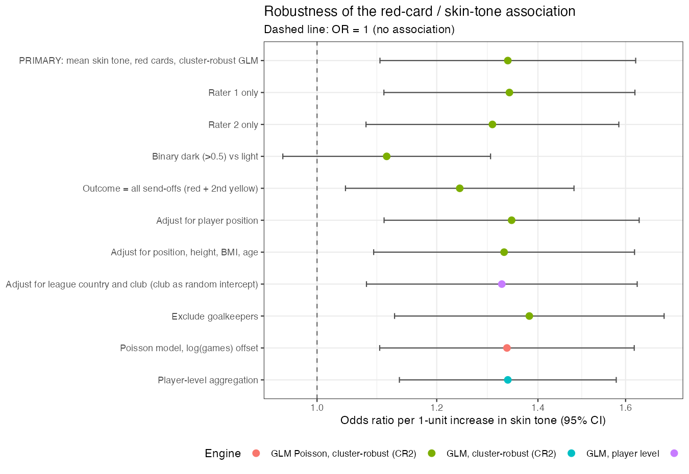
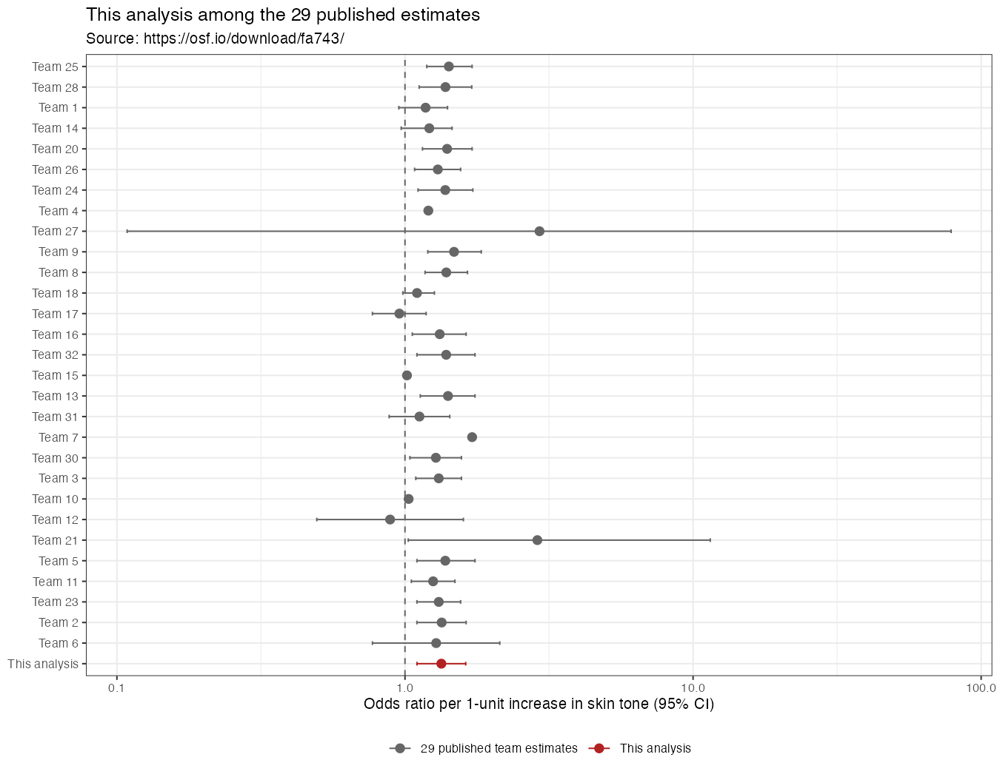

An independent analysis of the crowdstorming dataset (Silberzahn et al., 2018).
Prepared by Deepseek v4.1 Flash; all figures generated by analysis.R.
Question. In the 2012/13 first divisions of England, France, Germany and Spain, are referees more likely to give red cards to dark-skin-toned players than to light-skin-toned players?
Data. 146,028 player–referee dyads (2,053 players, 3,147 referees; 426,572 player-games), with skin tone rated on a 0–1 scale by two raters. Red cards are rare: 1,834 direct reds (0.43% of games), or 3,496 send-offs including second yellows. 124,621 dyads have a skin-tone rating and enter the primary analysis.
Method. Dyad-level logistic regression with red cards as successes out of games, skin tone as the average of both raters, and standard errors clustered by player and by referee (two-way cluster-robust). Ten pre-specified alternative choices were then run to test robustness, and the estimate was placed among the 29 published team estimates.
Result. Odds ratio 1.34 per 1-unit increase in skin tone (95% CI 1.10–1.62, p = .003). Nine of ten alternative choices leave a positive association with an interval excluding 1; only collapsing skin tone into a dark/light dichotomy removes it (OR = 1.11, 95% CI 0.95–1.30). The estimate sits just above the median of the 29 published team estimates (median 1.31; range 0.89–2.93).
Conclusion. The data show a small positive association between darker skin tone and red cards that survives adjustment for position, physique and league/club, but it depends on treating skin tone as graded rather than binary.
146,028 player–referee dyads (2,053 players, 3,147 referees) covering 426,572 player-games in the 2012/13 first divisions of England, France, Germany and Spain. Skin tone is rated by two people on a 0–1 scale (five levels); 21,407 dyads (468 players, all without a photo) have no rating. The two raters correlate at r = .92. Red cards are rare: 1,834 direct reds (0.43% of games); adding second-yellow dismissals brings the total to 3,496 send-offs.
The 124,621 dyads with a skin-tone rating are used for the primary analysis.
Approach. I model red cards at the dyad level with a logistic regression
in which each player–referee pair contributes its red cards as successes out of its games
(cbind(redCards, games - redCards)), and skin tone enters as the average of the
two raters. Because the same player appears under many referees and the same referee appears
with many players, observations are not independent; I use standard errors clustered by
player and referee (two-way cluster-robust, CR2), which gives a
population-averaged odds ratio without imposing a random-effects distribution. I keep the
outcome model as a binomial for games rather than a bare proportion so that players who
played more games count proportionally more.
Model: redCards ~ skin_tone, binomial with games trials, SE
clustered by playerShort and refNum.
On this scale the estimate says the odds of a red card for a player rated at the darkest point are about 34% higher than for a player rated at the lightest point. The association is small but the confidence interval excludes 1.
yellowReds) are also send-offs and could be included.Ten alternative choices, each defensible, were specified before running. My prior expectation is noted below; I expected the covariate adjustments and the binary split to be the most likely to move the interval across 1.
| # | Alternative choice | OR | 95% CI | CI excludes 1? | Expected to change conclusion? |
|---|---|---|---|---|---|
| — | Primary | 1.34 | 1.10 – 1.62 | yes | — |
| 1 | Rater 1 only | 1.34 | 1.11 – 1.62 | yes | no |
| 2 | Rater 2 only | 1.31 | 1.08 – 1.58 | yes | no |
| 3 | Binary dark (>0.5) vs light | 1.11 | 0.95 – 1.30 | no | yes — wider interval |
| 4 | Outcome = all send-offs | 1.24 | 1.04 – 1.48 | yes | slightly weaker |
| 5 | Adjust for position | 1.35 | 1.11 – 1.63 | yes | possibly |
| 6 | Adjust for position, height, BMI, age | 1.33 | 1.09 – 1.62 | yes | possibly |
| 7 | Adjust for league country and club | 1.33 | 1.08 – 1.63 | yes | possibly |
| 8 | Exclude goalkeepers | 1.38 | 1.13 – 1.70 | yes | no |
| 9 | Poisson model, log(games) offset | 1.34 | 1.10 – 1.62 | yes | no |
| 10 | Player-level aggregation | 1.34 | 1.13 – 1.58 | yes | no |

What changed the conclusion. Only the binary split (choice 3) moved the interval across 1: dark-vs-light gives OR = 1.11 (0.95–1.30). The other nine choices leave a small positive association whose interval excludes 1, with point estimates between 1.24 and 1.38. Two features of the result are worth naming:
Adjustment does not explain the association. Position, physical build and league/club leave the estimate essentially unchanged, so the crude association is not an artifact of defenders or specific leagues.
The player-level model returns exactly the primary point estimate (1.3374). This is not a coincidence: skin tone is constant within a player, so aggregating dyads to players leaves the maximum-likelihood estimate unchanged; only the standard error changes. The dyadic structure therefore matters for inference, not for the point estimate.
I downloaded the 29 teams' estimates from https://osf.io/download/fa743/ (opened in this session) only after completing the analysis and robustness steps. The file reports each team's analytic approach, its estimate on its native scale, and a harmonised odds ratio.
Summaries computed from that file:
My estimate (OR = 1.34, CI 1.10–1.62) sits in the dense cluster just above the median: 16 of the 29 team estimates are below it (roughly the 57th percentile of the 30 estimates including mine). It is almost identical to Team 2's harmonised estimate (OR = 1.34, CI 1.10–1.63, a linear probability model / logistic regression) and to several multilevel logistic specifications (Teams 24, 28).

Using a dyad-level logistic regression with standard errors clustered by player and referee, darker-skinned players receive red cards at a modestly higher rate (OR = 1.34, 95% CI 1.10–1.62). The estimate is stable across nine of ten alternative analytic choices and lands squarely inside the cluster of published team estimates, but collapsing skin tone to a dark/light split removes the association (OR = 1.11, 0.95–1.30), so the evidence is sensitive to how the predictor is operationalised and should be read as a small, specification-dependent association rather than a robust effect.